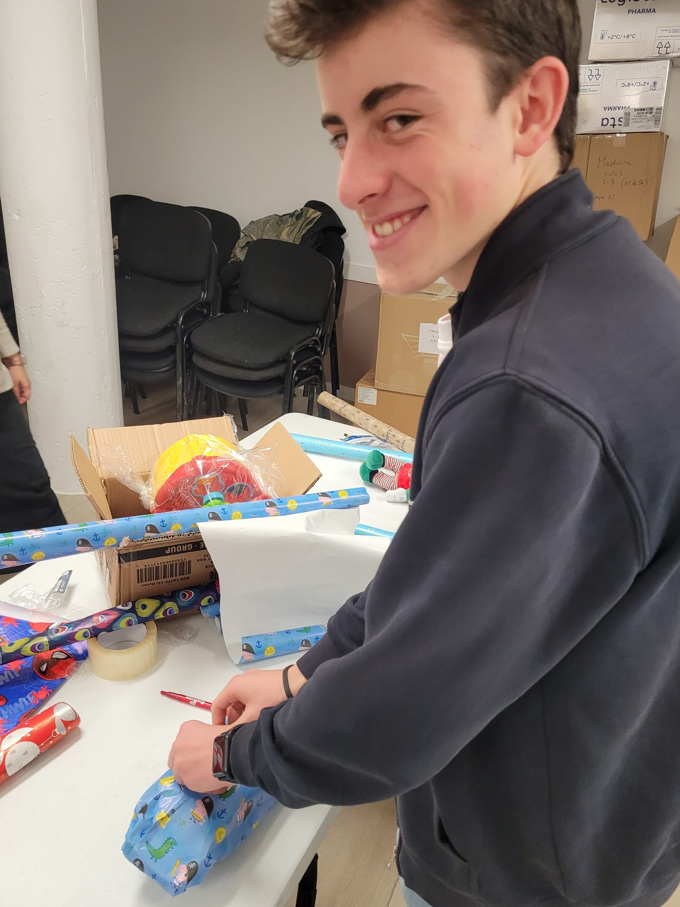

Regalos de Navidad
Reflexión:
En los días previos a Navidad me acerqué con unos amigos a una parroquia local a ayudar con un proyecto que estaban llevando a cabo de dar regalos a personas que no se los podían permitir. En concreto ayudamos a envolver los regalos, y había de todo, desde cosas para adultos como carteras hasta juguetes de todos los tipos, para que ningún niño se quedara sin su pedazito de alegría de Navidad. Había en la sala de la parroquia por lo menos unas 50 personas, y era muy bonito ver que todos estábamos trabajando juntos como un todo, cada uno haciendo su trabajo para hacer posible esta misión.
Resultado de aprendizaje: nº 5.
Pruebas:
-

- 